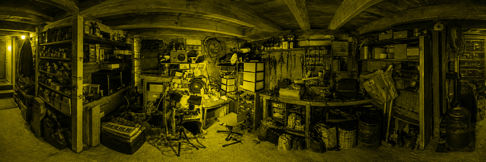

CRÉATIONS
ATELIER
PROCESS
CONTACT
objets soniques upcyclés · électronique DIY
╭
────
╮
│
◎
•
│
│
2
│
╰
────
╯
)
)
)
Pr
o
t
o
tips
2
LUX
ENTRER DANS L'ATELIER
Prototips2LUX
GLISSER POUR EXPLORER

KID'RADIO
BOOMBUS
HONEYMOON
BOÎTE À MESSAGE
— Prototips2LUX —
@prototips2lux
Prototips2LUX
objets soniques upcyclés · électronique DIY · Marseille
DÉFILER
ATELIER · 2024
KID'RADIO
BOOMBUS
HONEYMOON GLASSES
BOÎTE À MESSAGE
EXPLORER
MARSEILLE · FR
0%
SCROLL POUR EXPLORER
✕
CRÉATION
—
—
VOIR SUR INSTAGRAM →